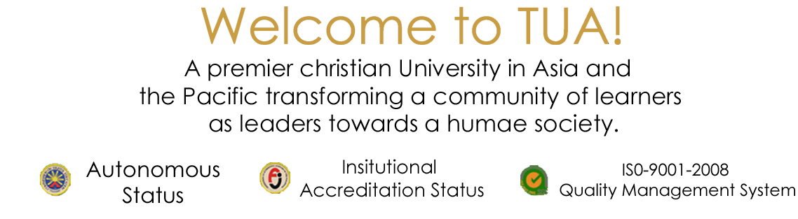

The College of Computing and Information Sciences is committed to providing accessible and responsive
programs of education and research recognized nationally for their high quality.
It intends to be the institution of choice for students and industry.
As a community of scholars, it shall lead by example and with vision, inspiration, integrity, and a shared sense of purpose.
It shall promote a stimulating and productive environment of work, study, and scholarly inquiry for students, faculty, and staff.
Mission Statement
The Computing and Information Sciences disciplines strive to support the mission of Trinity University of Asia by:
1) Providing curricula that are intellectually provocative, preparing graduates to appreciate both the fundamental concepts in computing and information sciences as well as their professions within the context of a larger community both locally and internationally.
2) Educating those who will contribute to the advancement of technical knowledge and who will be leaders in their profession.
3) Conducting basic and applied research in computing and information sciences, and related interdisciplinary areas.
Mission
Our mission can be accomplished through five broad and interrelated goals which are as follows:
- Continually maintain outstanding academic programs in computing and information sciences.
- Enable students to achieve excellence in computing and information sciences.
- Promote the discovery, integration, distribution and use of new knowledge in computing and information sciences in service to society.
- Ensure that faculty realize their maximum potential for contribution to research, teaching, and service.
- Empower students for professional careers that will entail diverse skills to meet complex and unanticipated challenges.
Copyright 2016 All Rights Reserved